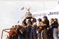
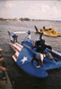
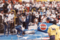

Despite the river and the weather, racing enthusiasm prevailed
and the races finally got underway on the Detroit River after a six hour delay
on Sunday. In the end it was Dave Villwock in the
Detroit sponsored Pico American Dream winning his first
Gold Cup by beating Mark Evans in the Miss Budweiser by half a mile.

|
There it is! PICO American Dream taking the checkered flag for the win. |
|
 |
Dave Villwock & the PICO team Accepting the prestigious Gold Cup. |
|
 |
The Moments after.. Dave pulls into the pits. |
|
 |
The Moments after.. In his first post-race interview. |